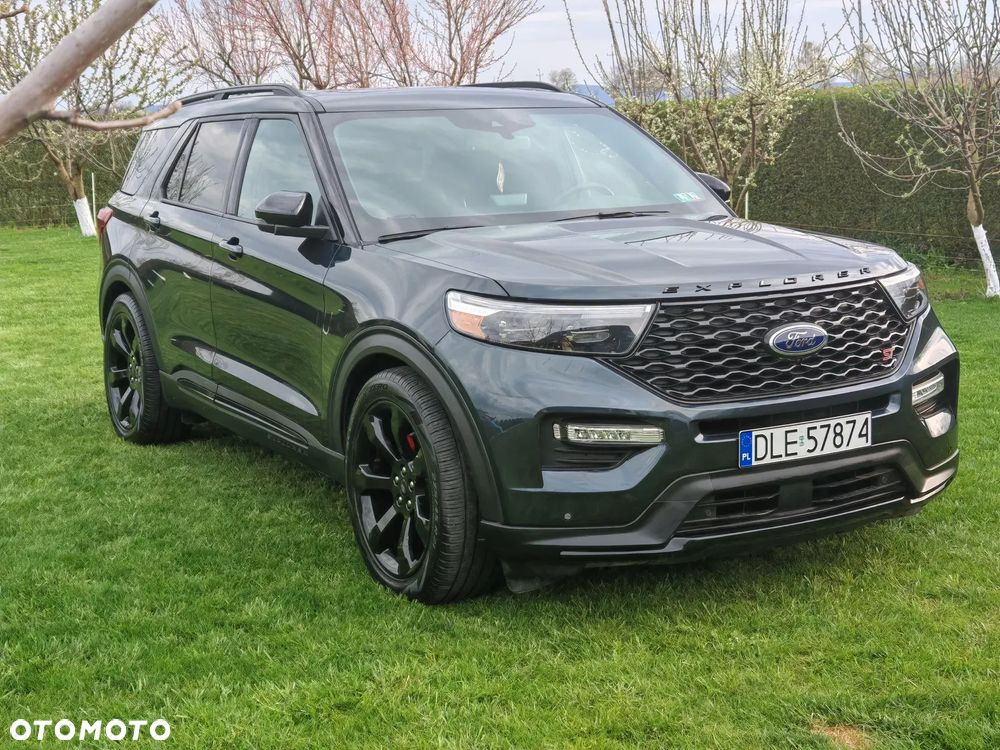
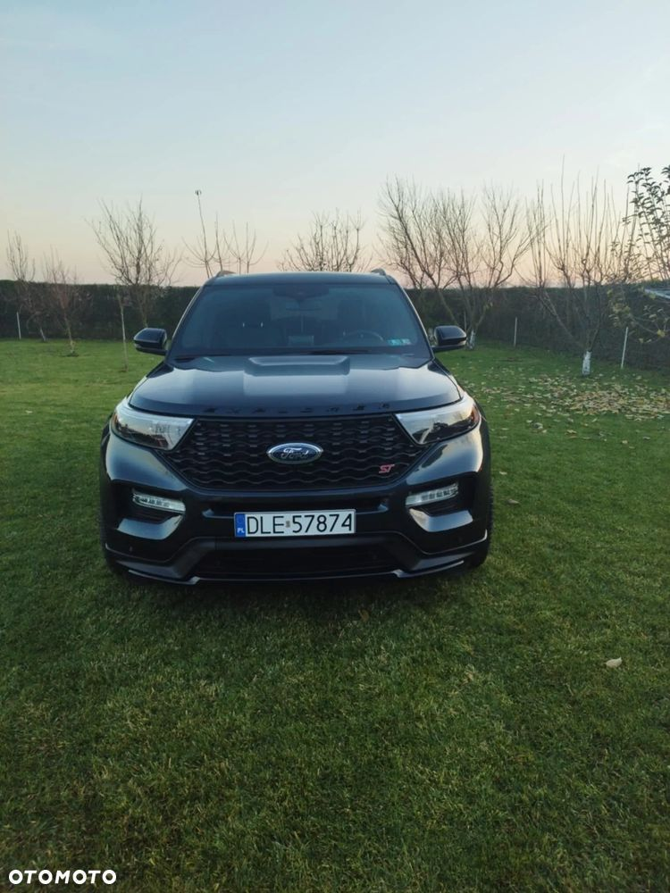
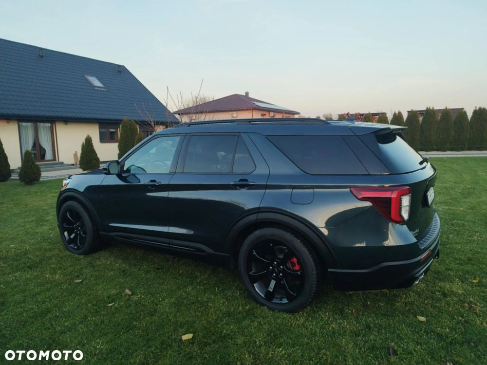
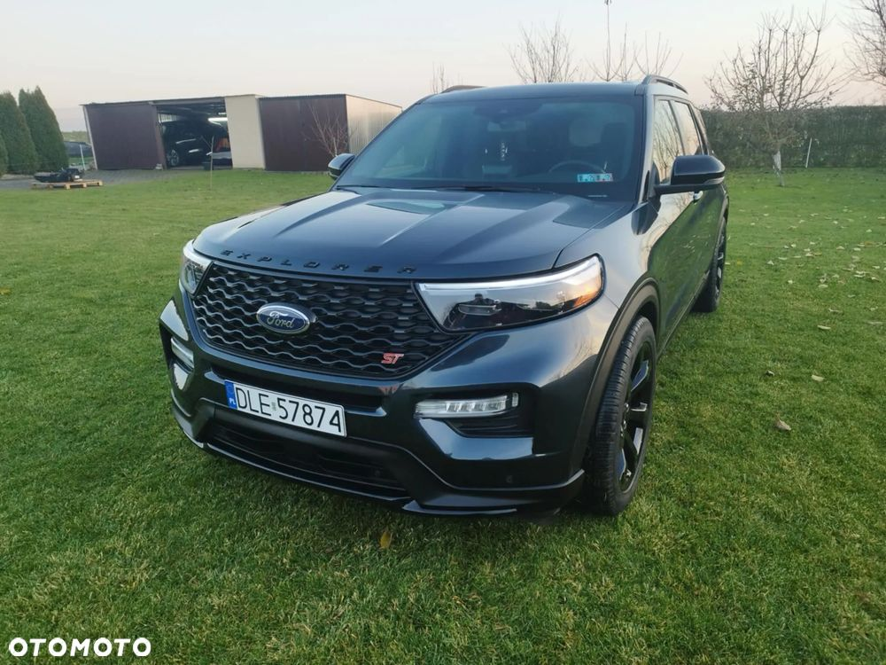
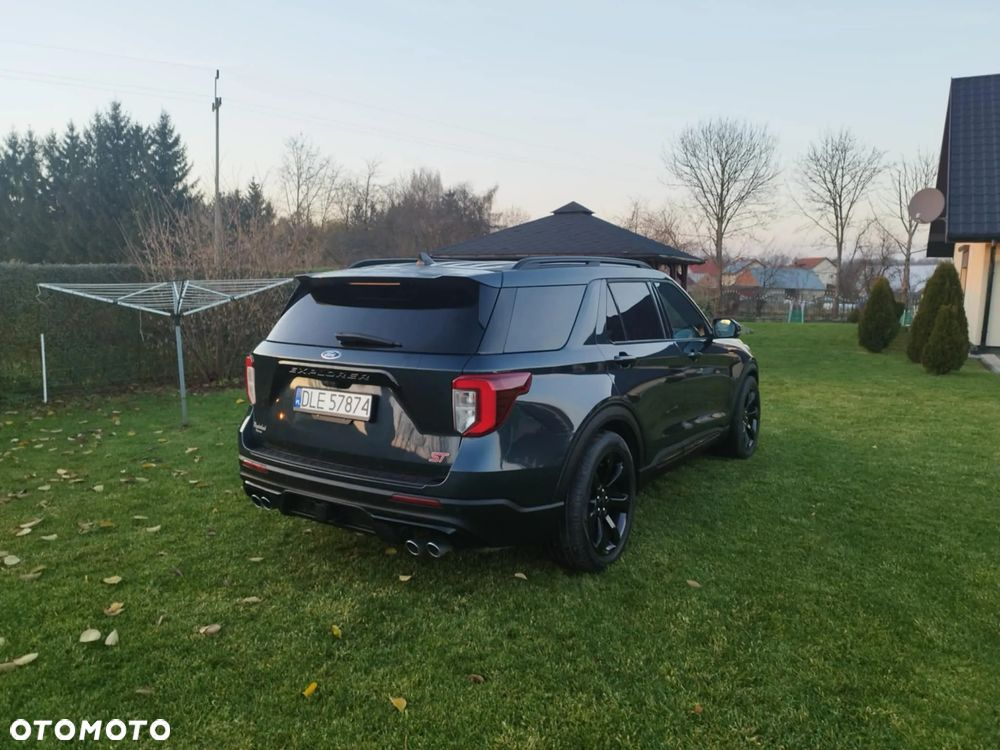
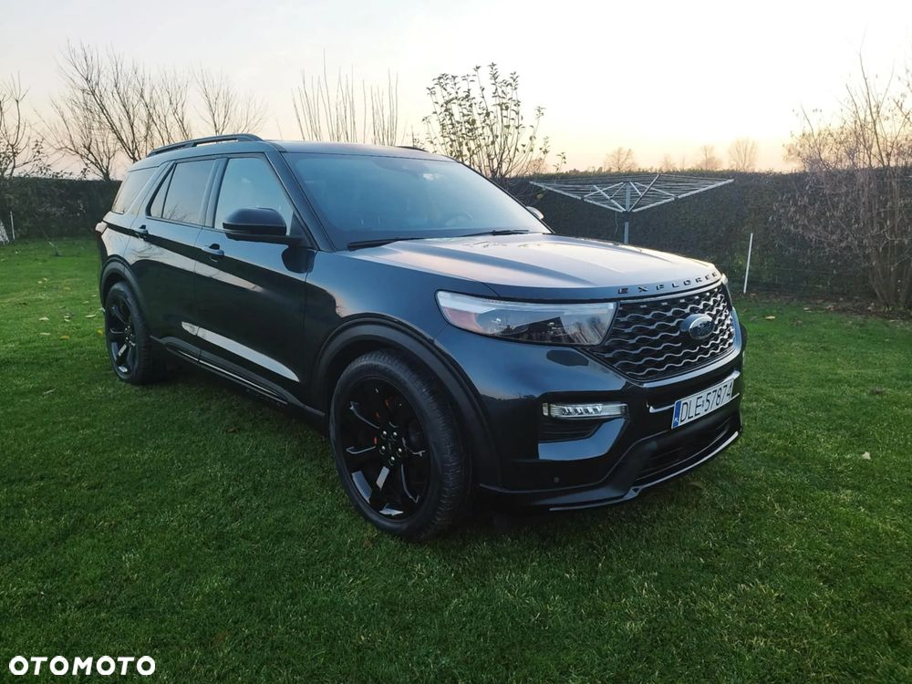
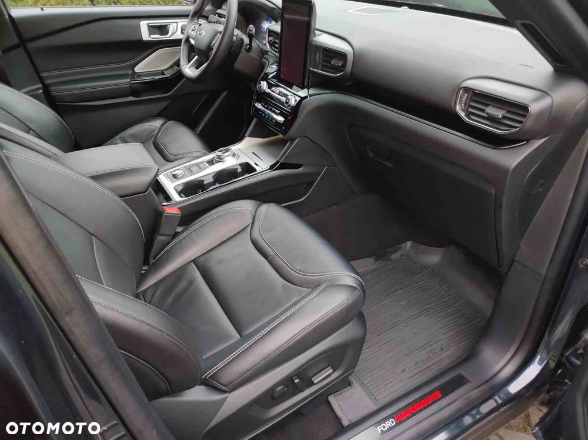
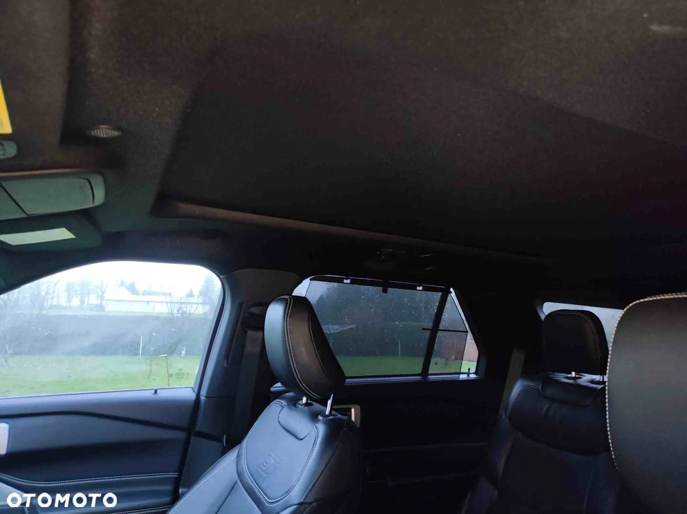
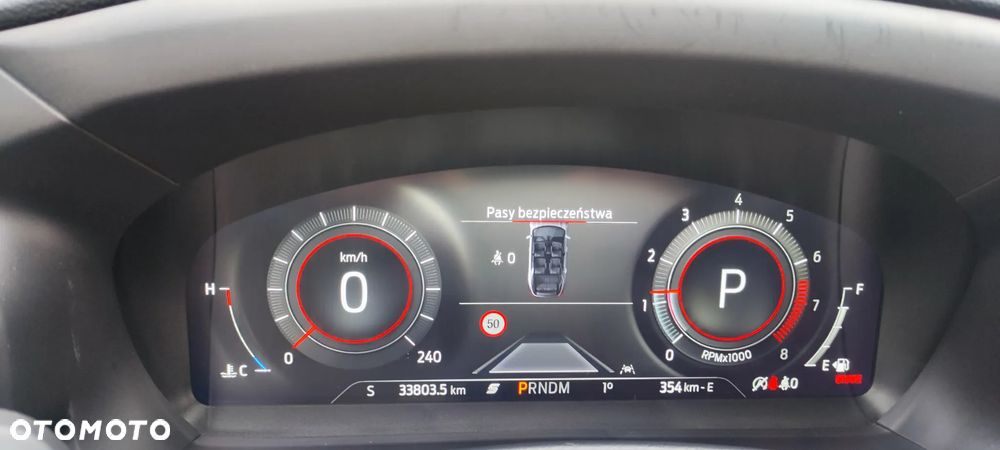
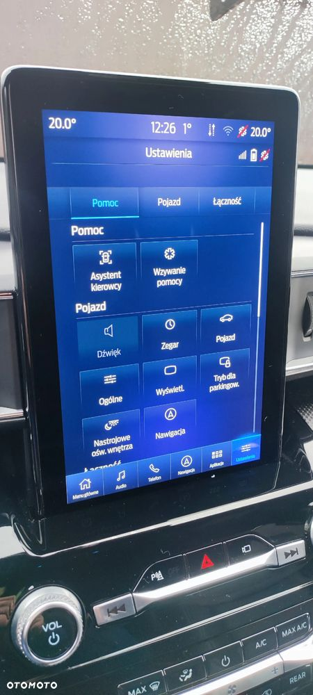

Witam
Na sprzedaż Ford Explorer w wersji ST z pełnego 2023 roku o pojemności 3.0 i mocy 404km.Kolor Forda to "Shadow Blue" ,przebieg na obecną chwilę to 41000km i ciągle rośnie.
Samochód opłacony i zarejestrowany.
W Fordzie został wymieniony olej silnikowy z filtrem,filtr kabinowy i zamontowany sportowy filtr stożkowy firmy S&B,wymieniony olej i filtr w skrzyni biegów. (posiadam rachunki).
W aucie zamontowane są dystanse 30mm i sportowe sprężyny firmy Lethal, lepiej trzyma się drogi.
Posiadam 2 kluczyki, książeczki.
Felgi 21" po całkowitej renowacji lakieru, zabezpieczone ceramiką.
W liczniku wgrane Pl menu,w sync3 wgrane najnowsze mapy EU i Polskie menu.
Zamontowane orginalne światło przeciwmgielne z Europejskim przyciskiem,przegląd na samochód 2 lata.
Zgadzam się na wizytę w wyznaczonej stacji przez kupującego,zgadzam się na oględziny firm,osób przed zakupem.
Zakup poprzez Bank,raty jak i leasing jak najbardziej możliwy ale to proszę dowiadywać się we własnym zakresie, bo z tym nie pomogę.
Z wyposażenia Explorer posiada:
Silnik: 3.0 V6 Ecoboost Twin-Turbo (404 KM,(562 Nm)
• Skrzynia: aut. 10-biegowa
• Napęd: AWD + tryby jazdy (Normal, Sport, Trail, Eco,DeepSnow/Sand, Slippery, Tow/Haul)
• Zawieszenie sportowe (Ford Performance)
• Hamulce sportowe (Ford Perdormance)
• Koła aluminiowe 21-calowe z oponami wielosezonowymi 275/45
• Tapicerka skórzana z fotelami
grzanymi i wentylowanymi.
• Grzane fotele drugiego rzędu
•środkowe fotele kapitańskie
• Cyfrowe zegary i centrum kierowcy (12.3 cala)
• Oświetlenie Full LED
• Oświetlenie ambientowe kabiny
• Kierownica multimedialna obszyta skórą,podgrzewana ,elektrycznie regulowana.
• Dach panoramiczny,czarna podsufitka.
Klimatyzacja 3-strefowa
System multimedialny SYNC3 z ekranem pionowym
10.1 cala, GPS, USB, AUX, Bluetooth, CarPlay /Android Auto
•ładowarka bezprzewodowa
• Nagłośnienie Bang&Oulfsen (14 głośników)
• Kamera 360 stopni,czujniki PDC parkowania przód/tył
•kamera z przodu i tyłu
• Aktywny tempomat (ACC)
• System utrzymania pasa ruchu
• Czujniki martwego pola (BLIS) i ruchu
poprzecznego
• Klapa elektryczna, otwierana za pomoca gestów stopą
• Lusterka zewnętrzne elektryczne, podgrzewane, składane z pamięcią ustawień.
• Przyciemniane szyby tylne plus rolety.
• Czujniki deszczu
Relingi dachowe
Gniazda 110V / 12V
• Dostęp bezkluczykowy + zdalne odpalanie pojazdu
• Alarm antywłamaniowy
• Czujniki ciśnienia powietrza w kołach
•system ostrzegania o kolizji.
W Fordzie wymienione końcowe tłumiki, przeprowadzona 1 etapowa korekta lakieru i nałożony wosk.
Orginalny filtr powietrza jak i orginalne sprężyny posiadam,przekaże kupującemu.
W razie jakichkolwiek dodatkowych pytań, zdjęć proszę dzwonić,pisać odpowiem na każde pytanie.Wart swojej ceny ,oczywiście negocjacje w ramach rozsądku na miejscu.
Tydzień temu wymieniony olej, filtr.
Zapraszam i pozdrawiam
